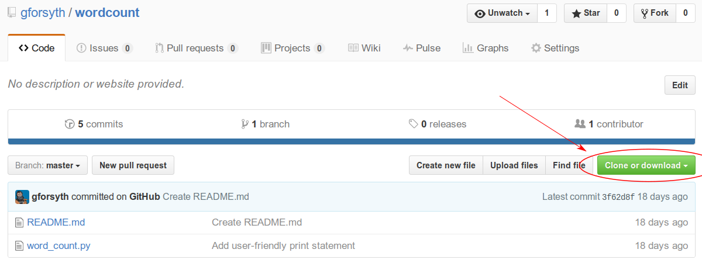
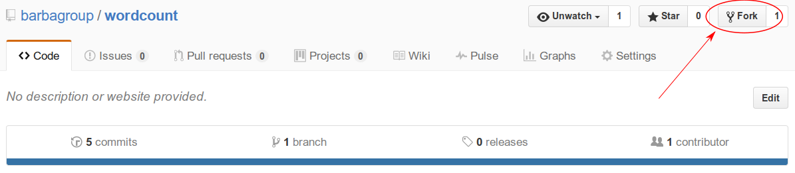
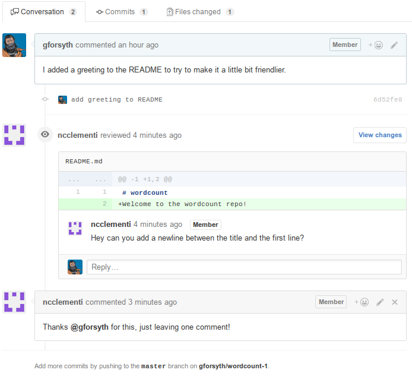

GitHub Workflow
We've used GitHub so far as a tool to backup and restore our work across different machines but always as a single user.
git clone
git init creates a new repository. But often you don't want to create a new
repository, but to copy an existing repository. Maybe you want to work on a
project at work and or possibly after hours at home(?)
When you want to create a copy of an existing repository, you use the git
clone command.
Clone an existing repository
First, visit the Barba-group copy of the "wordcount" repository on GitHub located at https://github.com/barbagroup/wordcount
On the right-hand-side, click the "Clone or Download" button:

Then copy the clone URL (make sure to use HTTPS!):

Now let's clone the repo. In a terminal, do git clone <URL>:
$ git clone https://github.com/barbagroup/wordcount.git
fatal: destination path 'wordcount' already exists and is not an empty directory
ACK. "fatal" is usually a bad sign. What happened? clone, by default, creates
a folder with the same name as the repository, so wordcount. But you already
have a folder called wordcount (right?), so git won't overwrite that copy
(and that's good).
In this case, we can specify a folder name for git to create that doesn't
conflict with the existing folder:
$ git clone https://github.com/barbagroup/wordcount.git gil_wordcount
Cloning into 'gil_wordcount'...
remote: Counting objects: 15, done.
remote: Total 15 (delta 0), reused 0 (delta 0), pack-reused 15
Unpacking objects: 100% (15/15), done.
You cloned your first repository! Now cd in and look at the repo history.
$ cd gil_wordcount
$ git log
commit 3f62d8fe59fc6cbded99485a3bebec95e8703a7d
Author: Gil Forsyth <gforsyth@users.noreply.github.com>
Date: Thu Dec 15 12:06:58 2016 -0500
Create README.md
commit de8fbc35961f0b7412a8e862e212a50ea0dff7cc
Author: Gil Forsyth <gforsyth@users.noreply.github.com>
Date: Wed Dec 14 18:02:38 2016 -0500
Add user-friendly print statement
commit 09633c88bb3f8b40d1c988b1df9004245320462a
Author: Gil Forsyth <gilforsyth@gmail.com>
Date: Tue Dec 13 11:01:11 2016 -0500
add helper text to input function
commit 97fba8ddd7685e650813675f5b024267af0b94e7
Author: Gil Forsyth <gilforsyth@gmail.com>
Date: Tue Dec 13 10:58:59 2016 -0500
allow user input of statement to word count
commit 47f748fea14e14ed84452a802dc14a5ea0829949
Author: Gil Forsyth <gilforsyth@gmail.com>
Date: Tue Dec 13 10:53:23 2016 -0500
Add initial version of word count script
Those are the commits made in the instructor's repository. We have copied the entire history of that repo to our own machine.
Edit the cloned repo
That README.md file is pretty sparse so let's add something to it.
Open README.md in nano and add a greeting, something like "Welcome to the
wordcount repo!"
Now save the file, stage it and commit it! (Need a refresher?)
Now push those changes up!
$ git push
Permission denied.
fatal: Could not read from remote repository.
Please make sure you have the correct access rights
and the repository exists.
What happened? We don't have write access to that repository because it doesn't belong to us. It would be a problem if anyone could overwrite a file on GitHub whenever they felt like it.
But how do we propose a change to a repository if we don't have write access?
We fork it!
forks
A fork is a complete copy of an existing git repository under your account. Since it's yours, you now have the ability to make changes to it. Even cooler is that once you've made those changes, you can then propose that they be added back in to the original repository that you forked! This is the main mechanism by which people contribute to other projects on GitHub.
To create a fork, first go to the GitHub page of the repository that you want to fork. If you are in a guided workshop right now, please partner up with someone near you and fork each other's repository. If you are following along on your own, you can use a repository that GitHub has created specifically for this purpose:
To create a fork, click the "Fork" button in the top right of the repo:

When you click "Fork", GitHub will take a few moments to create a complete copy of the repository under your control, then it will forward you to that page.
Notice that the username on the new page is your username, but the repo name is the same. Additionally, there will be a link under the repo name indicating that it is a fork of an existing repository.

Also note that there is a little info bar right above the file listing:

The fork is even with the upstream (original) repo. That means the history is identical. Now let's make a change!
clone your fork
Now that you have created a copy of the repo that you control, go ahead and clone it to your local machine.
As we did earlier, make a small change to the README.md file in nano, then
save, stage and commit. Then try again to push your changes back to GitHub.
$ git push
Counting objects: 3, done.
Delta compression using up to 4 threads.
Compressing objects: 100% (3/3), done.
Writing objects: 100% (3/3), 349 bytes | 0 bytes/s, done.
Total 3 (delta 1), reused 0 (delta 0)
remote: Resolving deltas: 100% (1/1), completed with 1 local objects.
To github.com:gforsyth/wordcount-1.git
d0dd1f6..31da785 master -> master
It worked!
Now that we pushed a change to our fork, the fork itself is one commit ahead of the upstream (or original) repository. The history of the two repositories is identical except for the commit that we just created.
Notice that the infobar above the file listing informs us that we are now one commit ahead of the upstream:

Pull Requests
In order to add this commit to the original, we open a pull request to propose adding our change to the original repository.
Note: git is a version control system. GitHub is an online service that
provides hosting for git repositories. GitHub also has additional features to
help with software collaboration, the most prominent of which is the "Pull
Request".
"Pull Requests" are not a feature of git, but of GitHub.
To create a Pull Request, click the link indicated in the figure below.

This will open up the following screen:

The "base fork" is the upstream location of the repository. It is the original version of the repository that we forked. The "head fork" is our version of the repo, that contains the changes we are proposing to add to the original.
Click "Create Pull Request".
On the following page, write a description of what you are proposing to add to the original project with the changes you have made. In this case, we have made a small, somewhat trivial change. In general, though, it is a good idea to write a detailed description when you open a PR.
You should include a description of the pull request's contents. Are you fixing a bug that you found? Which bug? Are you adding a new feature to an existing project? The more descriptive you are, the easier it is for the maintainers of the original project to determine if they want to accept your contribution.
For the small README change, write a message something like:
"I added a greeting to the README to try to make it a little bit friendlier."
Then click "Create Pull Request" once more to finish.
I opened a pull request, now what?
Once you open a pull request, hopefully a member of the upstream repo will review your proposed changes. Then, they can either accept them, reject them, or request some changes be made before they accept.
This is an example of what a review might look like. There's a specific request to add a newline to the README in between the heading and the greeting.

Also note at the bottom that we can add more commits to this PR by pushing them to our fork. If we make the requested change and then push it, this update is immediately reflected on the PR page.

You can see that the new commit and the commit message appear below the comments left by @ncclementi. The chronology of comments, requests and additional commits is preserved in the PR. You can also see that the original comment requesting an extra blank line is now hidden by default, since the file it refers to has been updated since the comment was left.